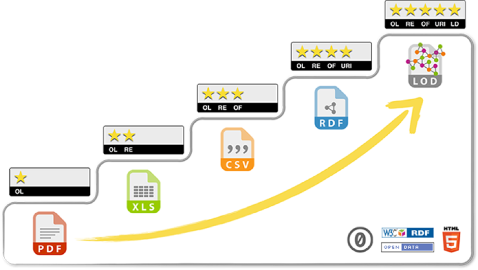

Aula 3
Dados de pesquisa abertos
O compartilhamento e a gestão dos dados de pesquisa é outro dos componentes fundamentais da ciência aberta.
Nesta aula você poderá compreender:
Dados de pesquisa
Os dados de pesquisa incluem todos os registos produzidos, obtidos ou usados durante o processo de pesquisa que possam validar os seus resultados. Podem assumir várias formas: registos de texto, imagem, vídeo, áudio, tabelas, resultados de questionários, entrevistas, observações, simulações, experiências, artefactos, fotografias, contribuições em redes sociais, entre outros.
É importante referir que apesar de se advogar a abertura dos dados de pesquisa sempre que possível, existem boas razões para não compartilhar dados: razões de razões de privacidade ou segurança de indivíduos ou entidades envolvidos na investigação, propriedade intelectual ou condicionalismos legais.
Dados Abertos
Segundo a Open Definition dados abertos são dados que podem ser livremente utilizados, reutilizados e redistribuídos por qualquer pessoa – sujeitos, no máximo, à exigência de atribuição à fonte original e ao compartilhamento pelas mesmas licenças em que as informações foram apresentadas.
O Open Data Institute (ODI) define os dados abertos como aqueles que qualquer pessoa pode acessar, usar e compartilhar. De acordo com o ODI, os dados abertos devem ser licenciados para deixar claro que qualquer um pode usar os dados da maneira que quiserem, incluindo transformá-los, combiná-los e compartilhá-los com outros, mesmo para fins comerciais.
Existem 5 níveis de abertura de dados - do menos para o mais aberto (interoperável):

Fonte: 5 ★ Open Data.
| ★ | O nível mais básico - para serem considerados dados abertos, estes devem estar disponíveis na internet sob uma licença aberta (independentemente do formato). |
| ★★ | No segundo nível, os dados devem ser estruturados e legíveis por máquina (por exemplo, um arquivo de excel em vez da imagem digitalizada da tabela). |
| ★★★ | No terceiro nível, para além de legíveis por máquina, devem ser usados formatos não-proprietários (ex. CSV em vez de excel). |
| ★★★★ | Adicionalmente, devem ser usados formatos abertos do W3C (RDF e SPARQL) para identificar os dados, para que outros possam referenciá-los. |
| ★★★★★ | Todas as opções acima, e ainda vincular seus dados aos dados de outras pessoas para fornecer contexto. |
Gestão de dados
O que é:
Processo contínuo, associado aos vários momentos de investigação.
Planejar antecipadamente como os dados serão coletados, documentados, geridos e preservados no início do projeto de pesquisa tem muitos benefícios. Irá permitir poupar tempo mais tarde e será mais fácil para toda a equipe encontrar, entender e analisar os dados. A longo prazo, seguir boas práticas de gestão de dados significa que pesquisadores não envolvidos com o projeto podem encontrar, entender os dados e usá-los no futuro. Ao documentar os dados providenciando a forma adequada de citá-los, será mais fácil obter crédito pelo reuso dos seus dados.

Dados FAIR
Princípios FAIR:
As boas práticas associadas à gestão e partilha de dados, que são fundamentais para a ciência aberta, foram resumidas e conceitualizadas recentemente num conjunto de princípios FAIR. Para serem FAIR os dados devem ser:
| Findable (Localizáveis) | O primeiro passo para tornar seus dados reutilizáveis é garantir que eles possam ser encontrados tanto por seres humanos quanto por máquinas. |
| Acessíveis | Depois que alguém encontrar seus dados, eles precisam saber como podem acessá-los. Isso pode incluir passar por um processo de autorização e / ou autenticação. |
| Interoperáveis | Para tornar seus dados reutilizáveis, você deve garantir que eles possam ser integrados a outros dados e que eles possam ser utilizados por aplicativos ou fluxos de trabalho para análise, armazenamento e processamento. |
| Reutilizáveis | Para maximizar a potencial reutilização de seus dados, verifique se eles - e seus metadados relacionados - estão bem descritos para que possam ser replicados e / ou combinados em diferentes configurações. |
Vídeo 4 - Pedro Príncipe
Fonte: Ciência Aberta SECTES.
Vídeo 5 - Dados Abertos (CONFOA)
Fonte: Projeto RCAAP.